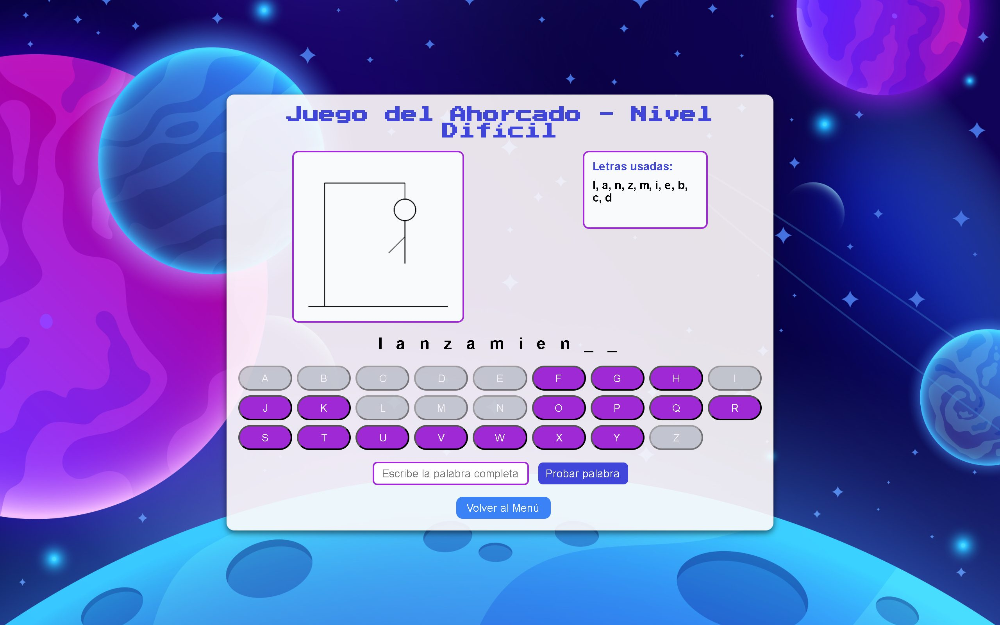
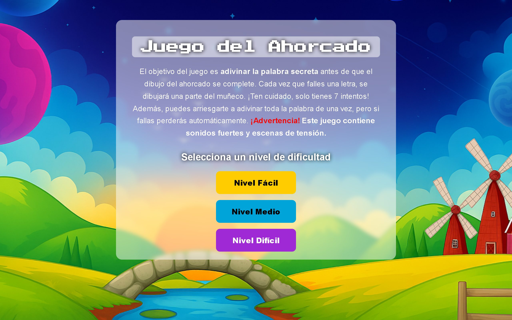
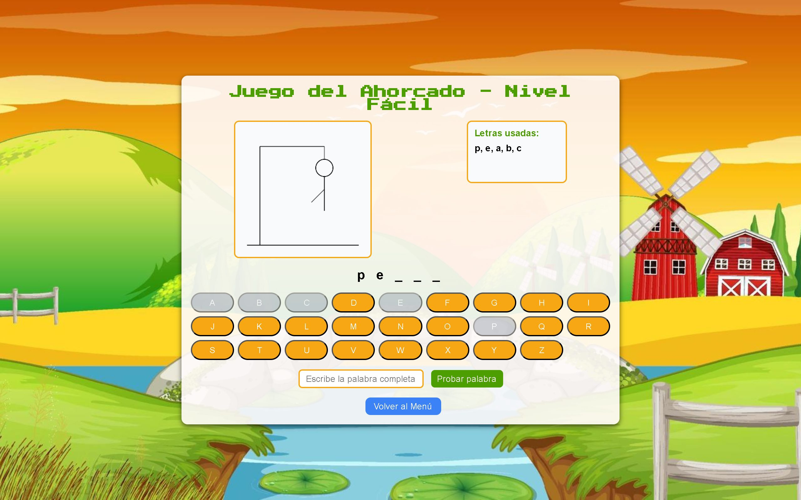
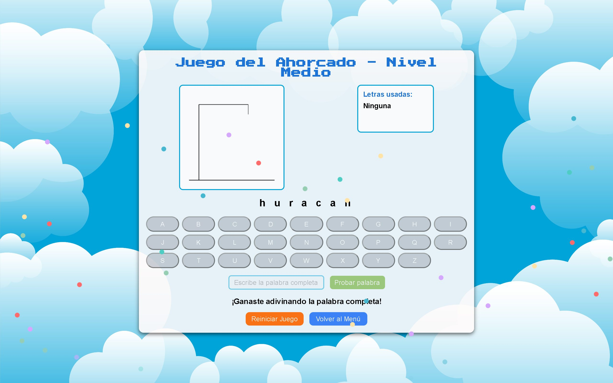

Juego del Ahorcado
Versión web del clásico juego de palabras: motor propio en JavaScript, dibujo en Canvas y varios niveles con sonido y animaciones.

Contexto
El ahorcado es un clásico de adivinar una palabra letra a letra antes de agotar los intentos. Lo elegí para llevar a la web un juego completo —con estado, interacción y feedback— usando solo los fundamentos: HTML, CSS y JavaScript, sin librerías ni frameworks. El resultado es una pequeña experiencia arcade con varios niveles temáticos, música y animaciones.
El problema
El reto era doble. Primero, modelar con precisión el estado del juego —palabra secreta,
letras acertadas, letras ya usadas e intentos restantes— y mantenerlo sincronizado con la
interfaz en cada jugada. Segundo, dibujar el muñeco de forma incremental sobre un
<canvas>, añadiendo una parte del cuerpo por cada fallo. A eso se sumó un
reto de diseño: que un mismo motor sirviera para todos los niveles sin duplicar la lógica.
Mi rol
Diseño y desarrollo frontend completos, de principio a fin.
- Máquina de estado del juego en JavaScript puro (palabra, aciertos, letras usadas e intentos).
- Renderizado incremental del ahorcado con la API de Canvas 2D.
- Teclado virtual generado dinámicamente en el DOM.
- Interfaz, temas visuales y estilos con HTML5 y CSS3.
- Integración de música de fondo y efectos de sonido.
La solución
Construí un único motor de juego en JavaScript vanilla que gestiona todo el estado en memoria y actualiza el DOM ante cada letra. La decisión de diseño clave fue separar los datos de la lógica: cada nivel es una página que solo aporta su lista de palabras, mientras el mismo script controla el comportamiento. Así, ampliar el juego es tan simple como añadir palabras.
- Tres niveles de dificultad con ambientación propia —campo, clima y espacio—, cada uno con su banco de palabras y su música.
- Dibujo del muñeco con la API de Canvas, parte a parte, según los fallos acumulados.
- Teclado virtual en pantalla, más la opción de arriesgarse a escribir la palabra completa: aciertas y ganas, fallas y pierdes.
- Detección de victoria y derrota, con mensajes, bloqueo del teclado y reinicio de partida.
- Efectos de sonido para acierto, fallo y final, y una lluvia de confeti animada al ganar.
- Un nivel secreto oculto tras un pequeño easter egg, que invierte la mecánica: el muñeco empieza completo y se va borrando.
Galería



Resultados y aprendizajes
El juego quedó totalmente funcional y jugable en el navegador. Fue un ejercicio muy completo para afianzar tres pilares del frontend: el manejo del estado, la manipulación del DOM y el dibujo por código con Canvas. Reutilizar un mismo motor para todas sus variantes me enseñó, en la práctica, el valor de separar datos y lógica desde el primer momento.
Si lo retomara hoy, unificaría los niveles en una sola página parametrizada y organizaría el JavaScript en módulos ES —justo el enfoque que sigo en este portafolio—, además de añadir soporte de teclado físico y persistir la mejor puntuación.